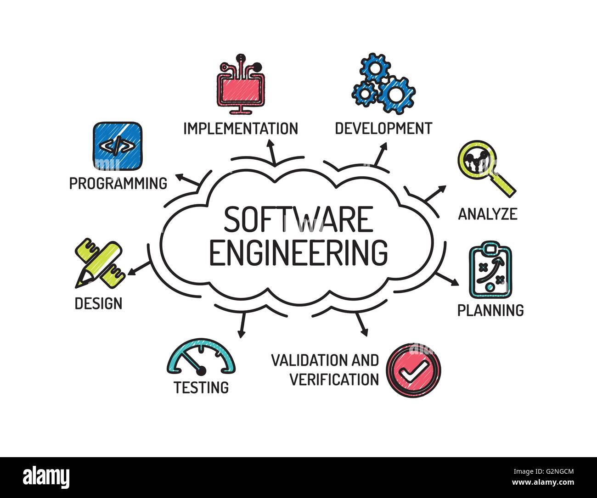

Welcome to Hades
The website offers various courses such as Network and Programming, Data Science, and Cybersecurity. The department also combines all of them by generalizing the knowledge acquired from them to achieve maximum work output. One shall therefore enhance his or her career in the future.
Brief History of the Department
The Department was founded by Hades The Great in 1999. It was meant, and it is still meant, to grow the future and make the world a better place technologically. Therefore, it plays a major role in the world of technology.
Summary of the Department
It is meant to build the future in accordance with the current updates in Artificial Intelligence.

About Us
Welcome to the Hades Department of Technology and Analytics. We are dedicated to providing cutting-edge education and research in the field of technology and analytics.

Hades Department of Technology and Analytics
1. Programming

2. Cybersecurity
3. Software Engineering
